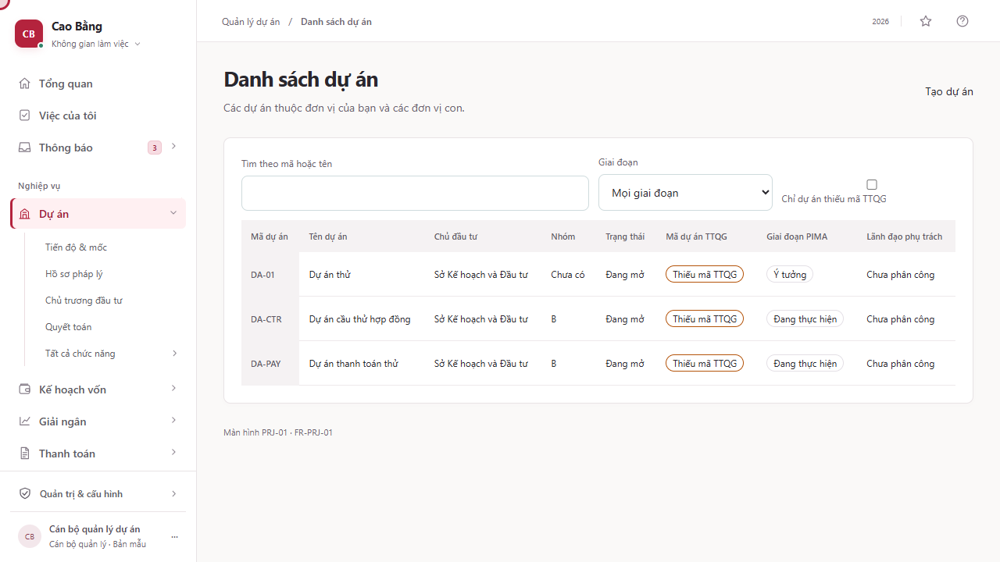
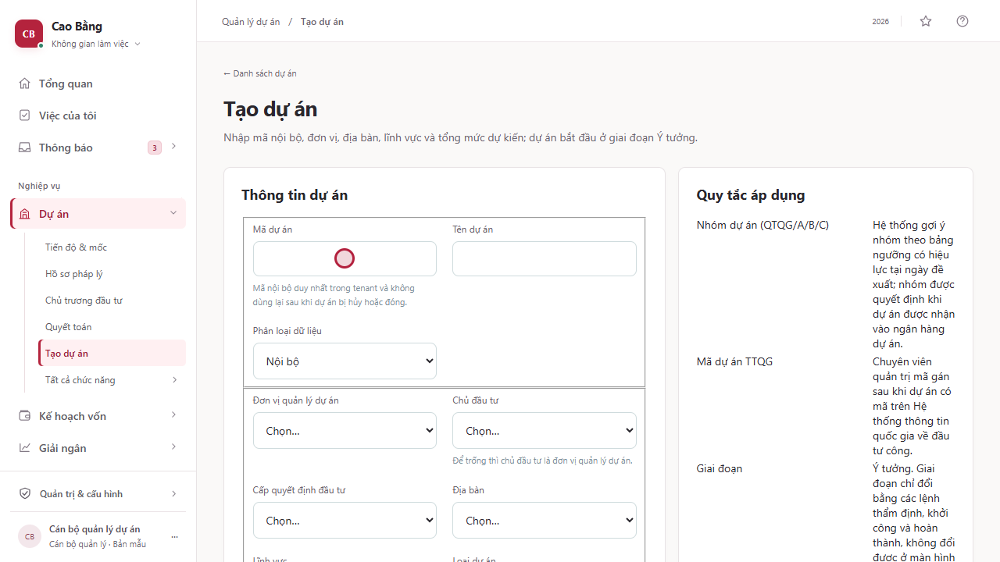
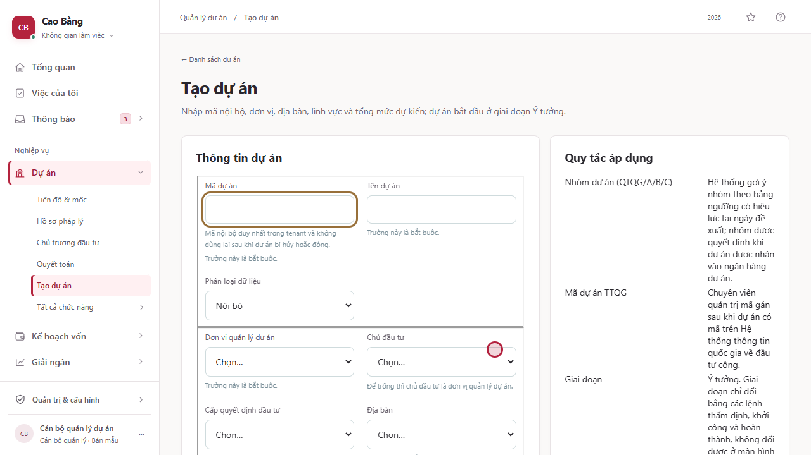
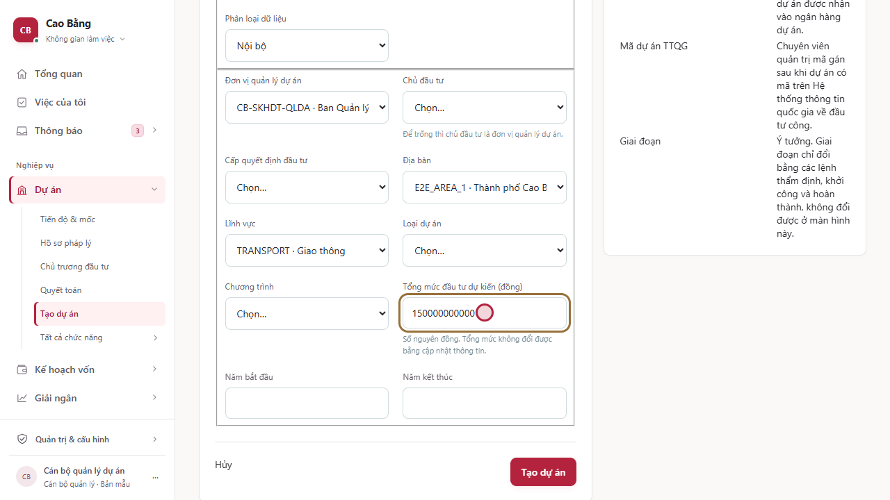
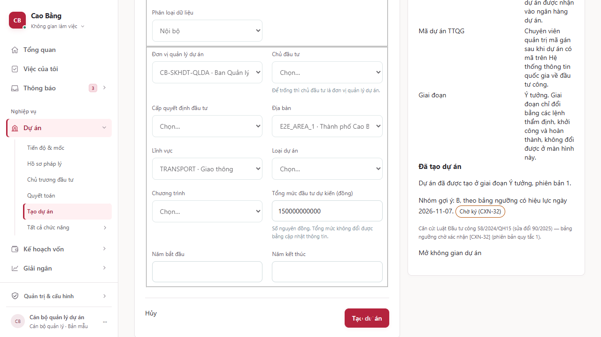
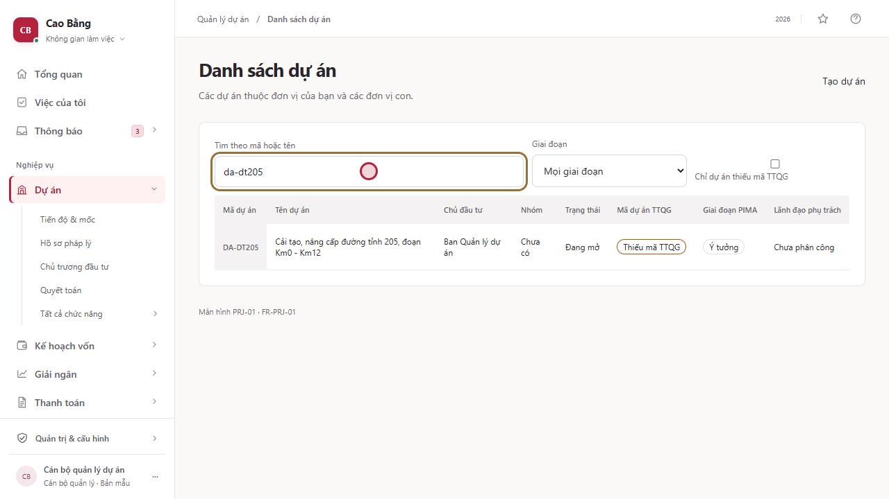
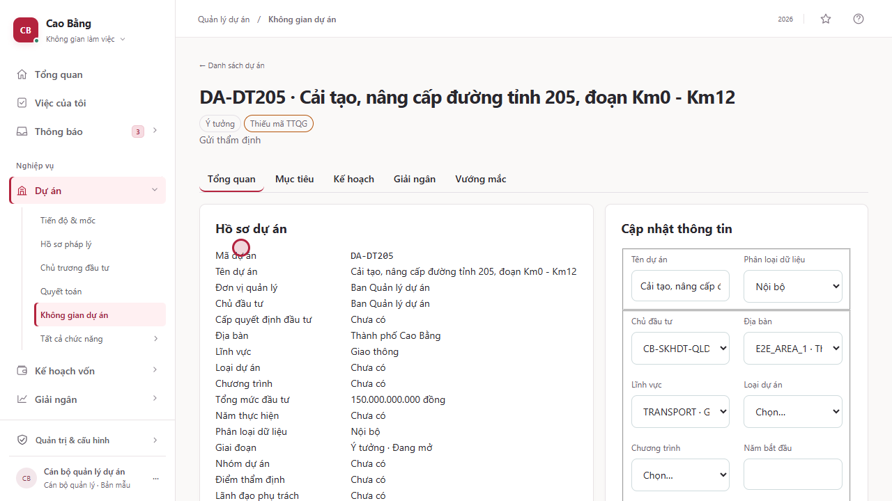

3Lập dự án mới: tạo, kiểm tra nhóm dự án và mở không gian dự án
Các bước trong clip (7)
-
1. Danh sách dự án
Màn hình: PRJ-01 · Danh sách dự án
Mở nhóm Dự án trên thực đơn và chọn Danh sách dự án. Màn hình liệt kê các dự án của đơn vị bạn và các đơn vị con: mã dự án, tên dự án, chủ đầu tư, nhóm, trạng thái, mã dự án quốc gia, giai đoạn và lãnh đạo phụ trách. Muốn lập dự án mới, bấm Tạo dự án.
Có thể tìm theo mã hoặc tên, lọc theo giai đoạn, hoặc chỉ xem các dự án còn thiếu mã dự án quốc gia.

-
2. Mở biểu mẫu tạo dự án
Màn hình: PRJ-02 · Tạo dự án
Biểu mẫu Tạo dự án hiện ra. Cần nhập năm thông tin bắt buộc: mã dự án, tên dự án, đơn vị quản lý dự án, địa bàn và tổng mức đầu tư dự kiến. Lĩnh vực và loại dự án giúp phân loại dự án về sau.
Mã dự án không được trùng với dự án đã có.

-
3. Hệ thống kiểm tra trước khi gửi
Màn hình: PRJ-02 · Tạo dự án
Nếu bấm Tạo dự án khi chưa điền gì, hệ thống không gửi gì lên máy chủ mà báo ngay từng ô còn thiếu bằng dòng chữ: Trường này là bắt buộc.
Dữ liệu chưa hợp lệ không bao giờ được lưu.

-
4. Điền thông tin dự án
Màn hình: PRJ-02 · Tạo dự án
Nhập mã dự án DA-DT205, và tên dự án là Cải tạo, nâng cấp đường tỉnh 205, đoạn từ ki-lô-mét 0 đến ki-lô-mét 12. Chọn đơn vị quản lý dự án là Ban Quản lý dự án, địa bàn là Thành phố Cao Bằng, lĩnh vực Giao thông. Tổng mức đầu tư dự kiến là 150 tỷ đồng, nhập theo đơn vị đồng.
Số tiền phải là số đồng nguyên, không có phần lẻ.

-
5. Dự án đã được tạo
Màn hình: PRJ-02 · Tạo dự án
Bấm Tạo dự án. Hệ thống báo Đã tạo dự án ở giai đoạn Ý tưởng, phiên bản 1. Hệ thống còn gợi ý nhóm dự án theo bảng ngưỡng tổng mức đầu tư đang có hiệu lực: với 150 tỷ đồng là nhóm B. Nhãn Chờ ký cho biết quy tắc ngưỡng này còn chờ người có thẩm quyền xác nhận.
Nhóm dự án chỉ là gợi ý; nhóm chính thức do người có thẩm quyền quyết định.

-
6. Tìm dự án trong danh sách
Màn hình: PRJ-01 · Danh sách dự án
Quay lại Danh sách dự án, dự án mới đã có ở giai đoạn Ý tưởng, kèm nhãn Thiếu mã dự án quốc gia. Gõ mã dự án vào ô tìm kiếm, danh sách chỉ còn đúng dự án đó.
Nhãn Thiếu mã dự án quốc gia nhắc bạn bổ sung mã khi có.

-
7. Mở không gian dự án
Màn hình: PRJ-03 · Không gian dự án
Bấm vào mã dự án để mở Không gian dự án: nơi gom mọi thông tin của một dự án, gồm kế hoạch, giải ngân và vướng mắc, để các chương sau cùng làm việc trên dự án này.
Các chương tiếp theo dùng lại dự án DA-DT205 vừa tạo.
